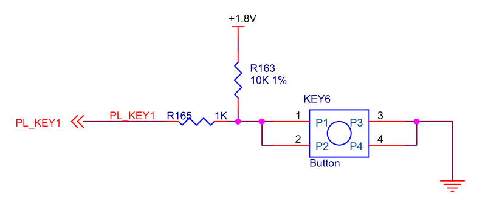
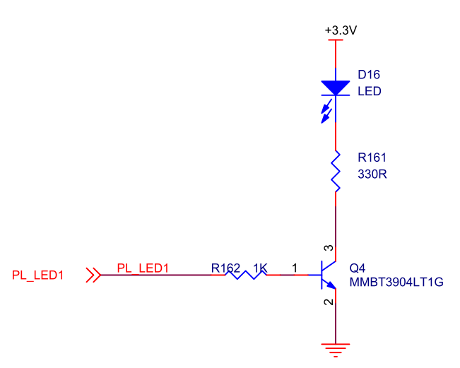
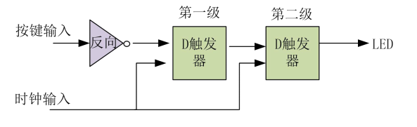

《第九章》Vivado 下按键实验¶
实验Vivado工程为“key_test”。
按键是FPGA设计当中最常用也是最简单的外设,本章通过按键检测实验,检测开发板的按键功能是否正常,并了解硬件描述语言和FPGA的具体关系,学习Vivado RTL ANALYSIS的使用。
9.1按键硬件电路¶
AXU3EG/AXU4EV/AXU5EV开发板按键部分电路
从图中可以看到,电路的按键松开时是高电平,按下时是低电平。
AXU3EG/AXU4EV/AXU5EV开发板LED部分电路
而LED部分,高电平亮,低电平灭
9.2程序设计¶
这个程序没有设计的很复杂,通过简单的硬件描述语言看透硬件描述语言和FPGA硬件的联系。首先我们将按键输入经过一个非门后再经过2组D触发器。经过D触发器的信号,会在D触发器时钟输入的上升沿锁存然后再送到输出。
在进行硬件描述语言编码之前,我们已经把硬件构建完成,这是一个正常的开发流程。有了硬件设计思路无论是通过画图还是通过Verilog HDL、VHDL都能完成设计,根据设计的复杂程序和对某种语言的熟悉程序来选择工具。
9.3创建Vivado工程¶
首先建立按键的测试工程,添加verilog测试代码,完成编译分配管脚等流程。
`timescale 1ns / 1ps
module key_test
(
input sys_clk_p, //system clock 200Mhz postive pin
input sys_clk_n, //system clock 200Mhz negetive pin
input key, //input four key signal,when the keydown,the value is 0
output led //LED display ,when the siganl low,LED lighten
);
reg led_r; //define the first stage register , generate four D Flip-flop
reg led_r1; //define the second stage register ,generate four D Flip-flop
wire clk ;
IBUFDS IBUFDS_inst (
.O(clk), // Buffer output
.I(sys_clk_p), // Diff_p buffer input (connect directly to top-level port)
.IB(sys_clk_n) // Diff_n buffer input (connect directly to top-level port)
);
always@(posedge clk)
begin
led_r <= ~key; //first stage latched data
end
always@(posedge clk)
begin
led_r1 <= led_r; //second stage latched data
end
assign led = led_r1;
endmodule
我们可以使用RTL ANALYSIS工具查看设计
分析RTL图,可以看出第一级D触发器经过取反后输入,第二级直接输入,和预期设计一致。
9.4板上验证¶
Bit文件下载到开发板以后,开发板上的” PL LED”处于灭状态,按键“PL KEY”按下“PL LED”亮。

ZYNQ MPSoC开发平台 FPGA教程 - Alinx官方网站